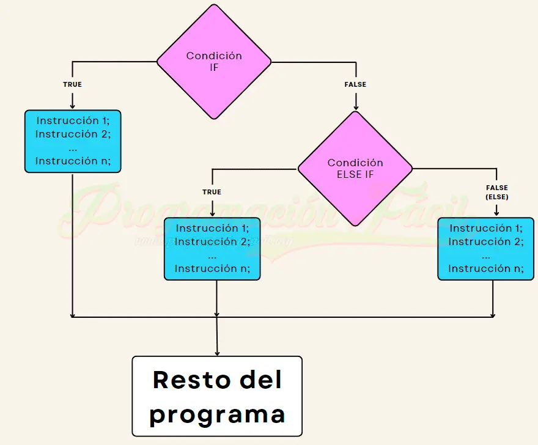

Estructura de Control "If"
¿Dónde se emplea?
La estructura de control "if" se emplea en programación para evaluar una condición lógica y, dependiendo de si esta es verdadera, ejecutar un bloque de código asociado.
¿Cómo se emplea?
Es una herramienta fundamental para la toma de decisiones dentro de un programa, ya que permite adaptar el flujo de ejecución a diferentes escenarios según los valores de las variables o el estado del sistema.